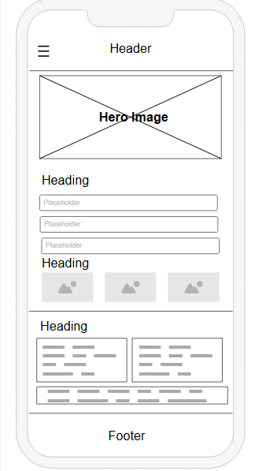
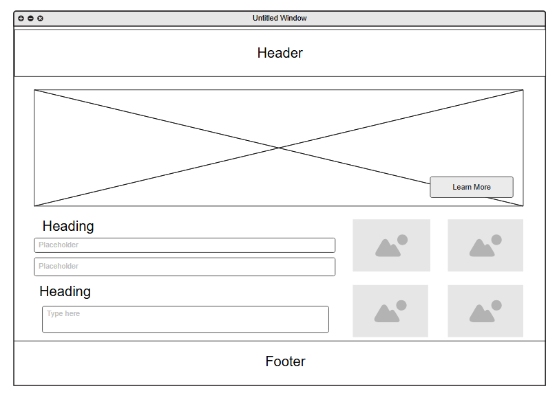

NaijaCode Collective - This name reflects a growing community of Nigerian web developers sharing insights, showcasing projects, and networking. It emphasizes inclusivity (“Collective”) and geographic identity (“Naija”).
Optional domain availability: naijacode.org
The website will serve as a hub for Nigerian web developers to showcase their work, connect with peers, access curated coding resources, and stay informed about relevant tech events and job opportunities.
#004d99) – Used for headings, navigation, and button accents.#f0f0f0) – Used as a background to maintain readability and focus on content.Mobile View (Phone)
Desktop View (Laptop/Desktop)
